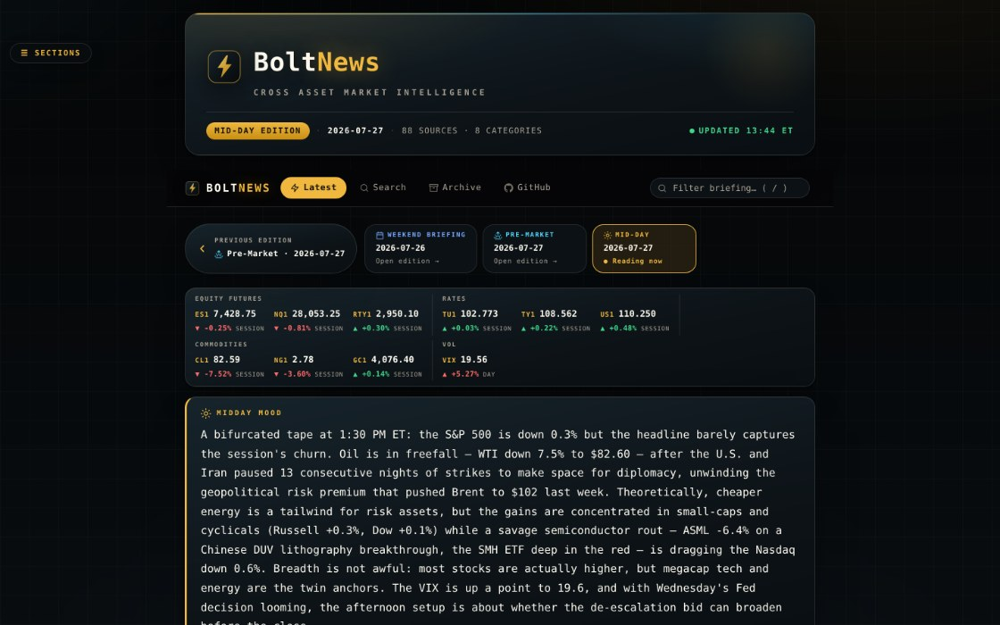

Cross-asset · three editions daily
BoltNews
An automated news desk for a fundamental long/short PM. Multi-agent discovery lanes sweep equities, rates, credit, FX, commodities, volatility and crypto, then write the pre-market, mid-day and weekend briefings.
- Python 3.12
- Multi-agent LLM
- Cron
- GitHub Pages
Open live site →